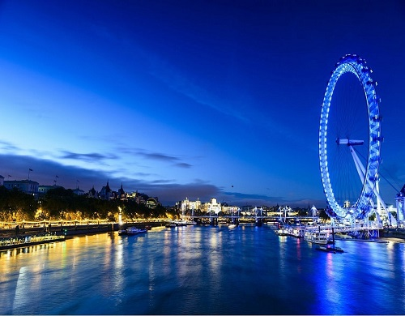

 |
伦敦眼（The London Eye）坐落在英国伦敦泰晤士河畔，是世界上首座、同时截至2005年最大的观景摩天轮，为伦敦的地标及出名旅游观光点之一。 伦敦眼于1999年年底开幕，当时赞助商还是英国航空公司因此又称千禧之轮，总高度135米（443英尺）。伦敦眼共有32个乘坐舱（由序号1排列到33。因为宗教忌讳，没有13号），因舱内外用钢化玻璃打造，所以设有空调系统。每个乘坐舱可载客约25名，回转速度约为每秒0.26米，即一圈需时30分钟。“伦敦眼”为庆祝新千年而建造，因此又称"千禧摩天轮"。乘客可以乘坐"伦敦眼"升上半空，鸟瞰伦敦。“伦敦眼”在夜间则化成了一个巨大的蓝色光环，大大增添了泰晤士河的梦幻气质。伦敦眼还为2015英国大选亮灯，红灯代表英国工党，蓝色代表保守党，紫色代表英国独立党，黄色代表自由民主党。 |